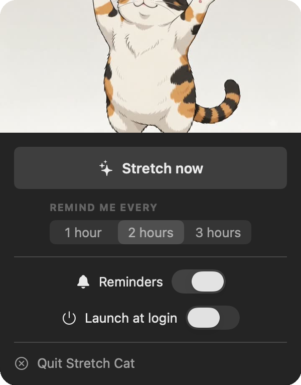

A cat that nags
you to
stretch
.
It sits in your menu bar and pops up every two hours for a little stretch you actually do.
now stretching
2hthen, stretch
How the nagging works
- Every 2 hoursit quietly counts down
- A gentle pinga notification, no klaxon
- The cat pops upand starts stretching
- You follow alongabout thirty seconds
Quietly there.
Impossible to ignore.
A tap on the menu-bar cat opens the controls. When it is time, the whole routine slides in.

Four moves.
One very flexible cat.
No floppy stick figures. The whole routine is hand animated, and the cat does not skip leg day.


Small app. Big on not annoying you.
It does one thing, stays out of your way, and never asks for an account.
- Lives in your menu barA little cat face up top. No Dock clutter, no window to babysit.
- Set your own paceRemind me every 1, 2, or 3 hours. Pause it when you are deep in.
- Gentle, skippable nudgesSnooze ten minutes or mark it done. Your call, every time.
- Starts with your MacFlip on launch at login and forget it is even there.
- Notarized by AppleOpens clean, with no scary unidentified-developer warning.
- Free and open sourceMIT licensed. Read every line on GitHub.

Ready when you are.
Free, about two megabytes, and your spine will thank you.
Download for Mac
Prefer the terminal?
brew install --cask vominhkhoii/stretch-cat/stretch-cat